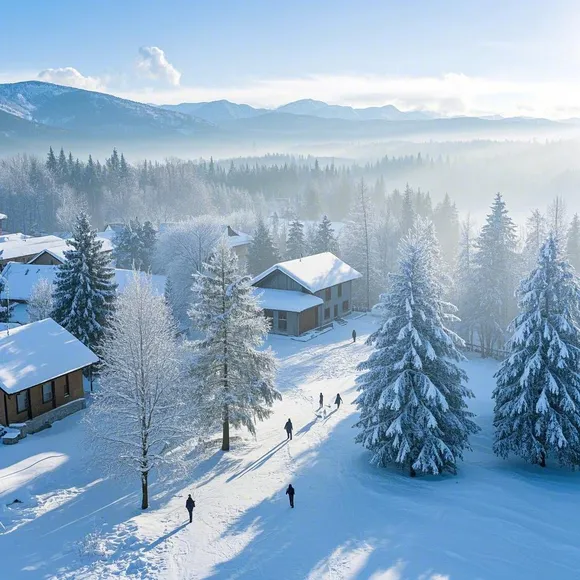

Major cold大寒

大寒是二十四节气中的最后一个节气，标志着冬季即将结束。以下是关于大寒的详细介绍：
1. 时间：每年公历1月20日前后，太阳到达黄经300°时为大寒。例如，2026年的大寒是1月20日。
2. 名称由来：《授时通考·天时》引《三礼义宗》中提到“寒气之逆极，故谓大寒”，意谓天气寒冷到极致。
3. 物候现象：古人将大寒分为三候，一候鸡始乳，此时气温逐渐升高，母鸡感受到春气，准备孵小鸡；二候征鸟厉疾，鹰隼之类的鸟，处于捕食能力极强的状态，盘旋于空中到处寻找食物以抵御严寒；三候水泽腹坚，水域中的冰一直冻到水中央，整个冰面变得非常坚固。同时，大寒花信分为三候：一候瑞香、二候兰花、三候山矾，在江南一带，这三种本土植物会在严冬凌寒盛开。
4. 气候特点：大寒是一年中最冷的时期之一，寒潮频繁南下，风力强劲，气温骤降，地面积雪不消，形成冰天雪地的景象。平均气温在零下2至4摄氏度之间，最低气温通常在零下14至17摄氏度之间，有一半的年份最低气温都会在这个节气期间出现。冻土深度通常达到30至40厘米，是全年冻土最深的时段之一。大寒也是一年中雨水最少的时期，南方地区大部分地区的降雨量仅比前期略有增加，华南地区通常为5至10毫米，而西北高原山地则只有1至5毫米。
5. 农事活动：大寒时节，中国各地的田间农活相对较少。北方的农民们忙着做积肥和堆肥等准备工作，为即将到来的春耕做好准备，同时也会加强对牲畜的防寒防冻措施。南方的农民则会加强小麦等作物的田间管理，做好经济作物的防寒工作。在华南地区，尽管越冬作物在这个时期的耗水量相对较小，但如果发生雪灾等极端天气，则需要根据不同地区的耕作习惯和条件，适时浇灌，对小春作物的生长有益。
6. 节庆风俗： 大寒迎年：大寒一到，年味便越来越浓，人们开始忙于除旧布新，腌制腊味年肴，准备年货。 吃散寒糕：在北京，人们有在大寒节气吃“散寒糕”的习俗，“年糕”与“年高”发声一致，既寓意吉祥如意、不断高升，又能驱散身上寒意。 年末尾牙祭：尾牙源自于拜土地公做“牙”的习俗，每年的农历十二月十六日大寒正是一年的尾牙，通常这天，做生意的人都会设宴请客，白斩鸡是必备的一道菜。不过，尾牙祭如今已逐渐退出大寒习俗，目前，仅有福建沿海、台湾等一些地方保留着尾牙祭的风俗。吃腊八粥：每个世纪，大寒会有几次遇上腊八节，即农历十二月初八。这一天，人们用五谷杂粮加上花生、栗子、红枣、莲子等熬成腊八粥，期盼新的一年到来。
7. 节气养生：大寒时节，空气干燥，气温很低，饮食起居要顺应冬季闭藏的特性。起居方面，要早睡养阳，晚起护阴，藏神志于内，以增强免疫功能，睡前热水浴足；防护方面，穿衣盖被防寒防风，尤其注意手足保暖，并且要注意随气温变化增减衣着；饮食方面，宜食热，忌生冷，防止损害脾胃阳气，可依体质特点，选用清淡润燥或升散性食物，如萝卜、洋葱、芥菜、莲藕、春笋等，亦可选用健脾、护胃、益气的谷物和果蔬，以调理脾胃，滋养脏腑；运动方面，可适当进行太极拳、慢跑、打篮球等体育锻炼，排解不良情绪，但应注意运动强度，不宜过度激烈

人物形象
大寒和小寒一样，都是表示天气寒冷程度的节气，大寒是天气寒冷到极致的意思。大寒节气时寒潮南下频繁，是一年中的最寒冷时节。我们认为大寒会是一个简约冷酷的男孩子，大寒是二十四节气里最冷的一个节气，将它拟人便需要在人物身上感受到冷酷，所以我们用了深蓝色，白色，藏青色来拟作人物。给大寒戴上了深色毛帽子，蓝色羊绒围巾，灰色毛衣，藏青色大衣，白灰色裤子，既起到了给人物保暖，也体现了他的简约冷酷。大寒有着深蓝色短发，蓝色眼睛，透出一股光鲜亮丽。他很聪明，不喜欢说话。画面里大寒一副不近人色的样子，但眼里透出一丝温暖，正是体现他isfj的mbti。
关于 MBTI 的报告
isfj 是守护者人格，忠实是守卫者人格类型最独特的特质之一。很少见到守卫者让友谊或亲情因缺乏维系而消逝。相反，他们投入大量的精力来维持与所爱之人的紧密联系—光靠短信问候几声可不够。当亲戚朋友有困难的时候，他们会放下一切伸出援手。大寒就应是这种外冷内热，嘴上说不在乎，其实心里比谁都更在乎一件事的那种人。
【二十四节气小科普之——大寒】